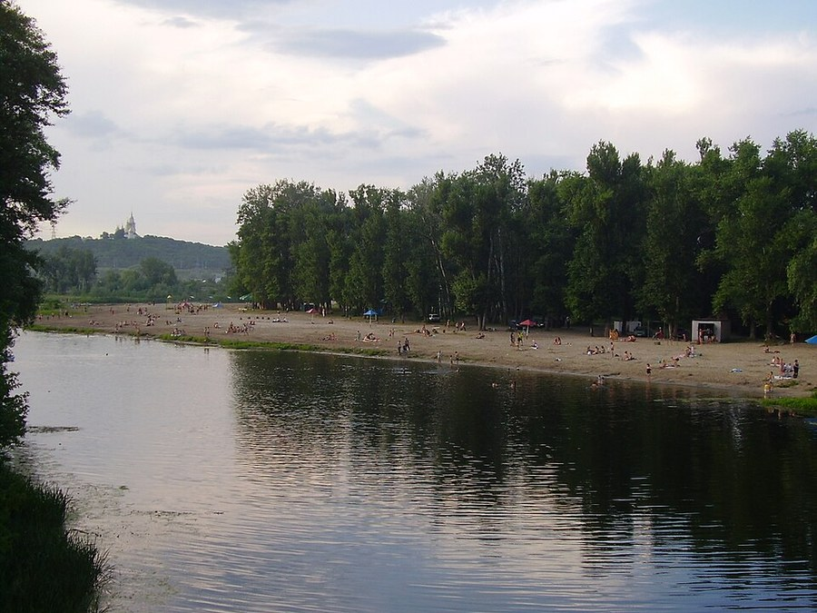

Vorskla river¶
In the 1380s [Historical record]¶
The Vorskla is a left tributary of the Dnieper near Poltava, in the forest-steppe. On 12 August 1399 Vytautas’s coalition (Lithuanians, Ruthenians, Poles, Moldavians, Wallachians, a Teutonic contingent under Marquard von Salzbach, and the exiled khan Tokhtamysh) was crushed by Edigu and Temür Qutlugh. en.wikipedia’s body text also gives 5 August, and the army figures vary (about 38,000 against 90,000 in one count). Vytautas built a wagon-fort with cannon; Temür Qutlugh asked for a three-day ceasefire while Edigu’s reserves came up, then feigned a retreat, drawing the army out; Edigu’s units appeared behind them. Tokhtamysh fled. Perhaps 20 of about 50 princes died, among them Andrius of Polotsk, Dmitry of Bryansk and Spytko II of Melsztyn; Posilge lists nine Order members dead. The Tatars besieged Kyiv (which paid) and raided to Lutsk. Lithuania lost the steppe; Smolensk, Novgorod and Pskov rebelled. Sources: en.wikipedia (Battle of the Vorskla River); VLE (Vytautas).
Vorskla river

Vorskla river · place — Image: Paffka, CC BY-SA 3.0 via Wikimedia Commons¶

Type |
place |
Note |
Steppe river battlefield where Vytautas’s grand army was routed by the Golden Horde in 1399. |
Sensory sketch¶
Open steppe in August: feather grass and wormwood, white dust, burned yellow plain to every horizon, with the Vorskla a green line of willows and reeds. Heat that shimmers, horseflies, locusts, the taste of dust in water. The sounds are scale: tens of thousands of hooves, kettledrums, the creak of wagon-fort chains, the cannon’s bang. No hill, no wood, no shadow; the day ends in orange dust.
In the saga¶
Book II’s atrocity. The land is “alien, endless”: no forest, so the Root-Mother cannot follow. The Steppe-Hunger feeds, and Velnias’s vision is collected. It is the saga’s clearest case of the Law of Cost: Vytautas’s pride is paid for in thousands of unburied names. The Order’s contingent fights under Marquard, who is among the rescued.
Getting there¶
Kyiv is about 300 km north-west (twelve to twenty days for an army at 15-25 km a day); Poltava is a few tens of kilometres south. Vytautas’s army left Vilnius on 18 May 1399 and fought on 12 August: roughly twelve weeks for about 1,000 km by road, including waits. Tokhtamysh fled north-west and was pursued as far as Lutsk, some 700 km away. A survivor’s road home ran through Kyiv, then the Dnieper to Lutsk and Vilnius, three to four weeks.
Scenes set here¶
Book II ch. 23 Raudonas dangus (the steppe between the Dnieper and the Vorskla), ch. 24 Edigėjus (the ford, 11 Aug), ch. 25 Dulkės ir kraujas and ch. 26 Skerdynės prie upės (the east bank, 12 Aug), ch. 27 Antrasis bėgimas (the retreat north); recalled in Book III ch. 2, ch. 28.
Relations
Events here: Battle of the Vorskla
Timeline¶
Year |
Event |
Book |
|---|---|---|
1399-08-12 |
II · The Golden Shadow |
Connections¶
graph LR
ev_vorskla["Battle of the Vorskla"]
vorskla["Vorskla river"]
ev_vorskla -->|Location| vorskla
style vorskla stroke-width:3px